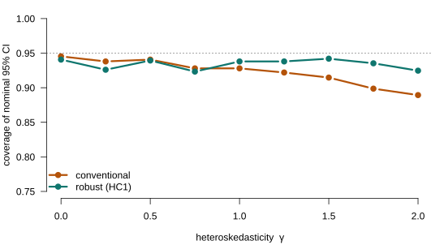

Lecture 7
PIMES/UFPE
Lectures 4–5 already made heteroskedasticity the default: \(\E[\beps\beps'\mid\bX]=\bD\) is a general positive-definite matrix, OLS is consistent, and the robust (sandwich) standard errors deliver valid inference with no homoskedasticity assumption. So the classical “violation of A4” story is behind us. Two questions remain — and they are what this lecture is about.
The model is the familiar linear one, with the error covariance left general: \[\bY=\bX\bbeta+\beps,\qquad \E[\beps\mid\bX]=\bzero,\qquad \E[\beps\beps'\mid\bX]=\bD,\] with \(\bD\) symmetric positive-definite (an \(n\times n\) matrix). Homoskedasticity, \(\bD=\sigma^2\bI\), is the special case — not the starting point.
Definition 1 (The two leading structures) Heteroskedasticity (this lecture’s focus): errors uncorrelated across observations but with different variances — \(\bD=\operatorname{diag}(\sigma_1^2,\dots,\sigma_n^2)\), i.e. \(\E[\varepsilon_i^2\mid\mathbf{x}_i]=\sigma_i^2(\mathbf{x}_i)\). Dependence: \(\bD\) has non-zero off-diagonal entries — serial correlation (time series) or within-cluster correlation (Part V).
Nothing about consistency or valid inference breaks under a general \(\bD\):
A general \(\bD\) can break A4 in two ways — heteroskedasticity (the diagonal of \(\bD\) varies across observations) or autocorrelation (non-zero off-diagonals), or both. OLS stays unbiased and consistent either way, but it pays for ignoring \(\bD\) in precision. Compare the variance OLS assumes with the true one: \[\underbrace{\sigma^2(\bX'\bX)^{-1}}_{\text{under A4}} \qquad\text{vs.}\qquad \underbrace{(\bX'\bX)^{-1}\bX'\bD\bX(\bX'\bX)^{-1}}_{\text{true, general }\bD}.\]
If the trouble is unequal (and correlated) variances, the cure is to rescale the observations so the variances become equal and the correlations vanish — then the classical model, and OLS’s optimality, are back. Since \(\bD\) is positive-definite, there is a matrix \(\mathbf{L}\) with \[\mathbf{L}\,\bD\,\mathbf{L}'=\bI,\qquad\text{equivalently}\qquad \bD^{-1}=\mathbf{L}'\mathbf{L}\] — the matrix analogue of “dividing by the standard deviation” (a Cholesky factor is one such \(\mathbf{L}\)).
Pre-multiply the model by \(\mathbf{L}\): with \(\bY_*=\mathbf{L}\bY\), \(\bX_*=\mathbf{L}\bX\), \(\beps_*=\mathbf{L}\beps\), \[\bY_*=\bX_*\bbeta+\beps_*,\qquad \E[\beps_*\beps_*'\mid\bX]=\mathbf{L}\,\bD\,\mathbf{L}'=\bI.\] The transformed errors are homoskedastic and uncorrelated — the classical model holds for \((\bY_*,\bX_*)\), so OLS on the transformed data is efficient. That is GLS.
Theorem 1 (Generalized least squares) OLS on the transformed model is \[\hat{\bbeta}_{\text{GLS}} =(\bX_*'\bX_*)^{-1}\bX_*'\bY_* =(\bX'\bD^{-1}\bX)^{-1}\bX'\bD^{-1}\bY.\] Among linear unbiased estimators it has the smallest variance — the generalized Gauss–Markov (Aitken) theorem — with \[\Var[\hat{\bbeta}_{\text{GLS}}\mid\bX]=(\bX'\bD^{-1}\bX)^{-1}.\] OLS is the special case \(\bD=\sigma^2\bI\) (weight matrix \(\bI\) instead of \(\bD^{-1}\)).
Corollary 1 (Weighted least squares) When the violation is pure heteroskedasticity, \(\bD=\operatorname{diag}(\sigma_1^2,\dots,\sigma_n^2)\), the transformation is just dividing each observation by its own \(\sigma_i\) (\(\mathbf{L}=\operatorname{diag}(1/\sigma_1,\dots,1/\sigma_n)\)). GLS then takes the familiar weighted form \[\hat{\bbeta}_{\text{WLS}} =\Big(\textstyle\sum_i \tfrac{1}{\sigma_i^2}\,\mathbf{x}_i\mathbf{x}_i'\Big)^{-1}\Big(\textstyle\sum_i \tfrac{1}{\sigma_i^2}\,\mathbf{x}_i y_i\Big) \ -\ \text{exactly the weighting OLS was missing.}\]
GLS needs \(\bD\), which we never know. But an unrestricted \(\bD\) has \(n\) variances — too many to estimate from \(n\) observations. Model the variance with a few parameters:
Definition 2 (The skedastic regression) Specify \(\sigma_i^2=\sigma^2(\mathbf{z}_i,\boldsymbol{\alpha})\) for a small parameter vector \(\boldsymbol{\alpha}\) and observed \(\mathbf{z}_i\) (often a subset/transform of \(\mathbf{x}_i\)) — for example the linear \(\sigma_i^2=\alpha_0+\mathbf{z}_i'\boldsymbol{\alpha}_1\) or the multiplicative \(\sigma_i^2=\exp(\alpha_0+\mathbf{z}_i'\boldsymbol{\alpha}_1)\). Estimate \(\boldsymbol{\alpha}\) by regressing the squared OLS residuals \(\hat e_i^2\) on \(\mathbf{z}_i\) — the skedastic regression.
Theorem 2 (Feasible GLS) Form \(\widehat{\bD}=\operatorname{diag}(\hat\sigma_1^2,\dots,\hat\sigma_n^2)\) from the skedastic regression and plug it in: \[\hat{\bbeta}_{\text{FGLS}}=(\bX'\widehat{\bD}^{-1}\bX)^{-1}\bX'\widehat{\bD}^{-1}\bY.\] If the skedastic model is correctly specified, estimating \(\boldsymbol{\alpha}\) is asymptotically free: \(\hat{\bbeta}_{\text{FGLS}}\) has the same asymptotic distribution as infeasible GLS.
Why “asymptotically free”: the sampling error in \(\hat{\boldsymbol{\alpha}}\) enters \(\hat{\bbeta}_{\text{FGLS}}\) only through \(\widehat{\bD}\pto\bD\), and a \(\sqrt{n}\)-consistent \(\hat{\boldsymbol{\alpha}}\) perturbs \(\hat{\bbeta}\) by a term that vanishes faster than \(1/\sqrt{n}\). So FGLS and GLS share the limit \(\Normal(\bzero,(\bX'\bD^{-1}\bX/n)^{-1})\).
If FGLS is efficient and asymptotically free, why is OLS still the default? Three reasons — this is the heart of the lecture.
Theorem 3 (Testing constant variance) Homoskedasticity is \(H_0:\boldsymbol{\alpha}_1=\bzero\) in the skedastic regression \(\hat e_i^2=\alpha_0+\mathbf{z}_i'\boldsymbol{\alpha}_1+\nu_i\) — the variance does not depend on \(\mathbf{z}_i\). Test it with the joint Wald/\(F\) on \(\boldsymbol{\alpha}_1\) (equivalently \(nR^2\dto\chi^2_q\), \(q=\dim\boldsymbol{\alpha}_1\)). The two classic choices differ only in \(\mathbf{z}_i\): White uses the squares and cross-products of \(\mathbf{x}_i\); Breusch–Pagan uses a general \(\mathbf{z}_i\). Under independence they are essentially the same test.
A heteroskedasticity test answers one scientific question: does \(\sigma^2\) depend on the regressors? It is not a tool to choose between OLS and FGLS, nor between classical and robust standard errors — “hypothesis tests are not designed for these purposes.” You use robust errors regardless of the test. Run the test only if whether \(\sigma^2(\mathbf{x})\) varies is itself of economic interest.
Definition 3 (Clustered sampling) The sample is \(C\) groups (clusters) — firms in industries, students in schools, individuals in villages — \[y_{i,c}=\mathbf{x}_{i,c}'\bbeta+\varepsilon_{i,c},\] with errors correlated within a cluster but independent across clusters — off-diagonal structure in \(\bD\), block by block, from how the sample was drawn. OLS stays unbiased when \(\E[\beps_c\mid\bX_c]=\bzero\), which requires within-cluster interactions to be in the model (a pupil’s outcome must not depend on classmates’ regressors).
Theorem 4 (Cluster-robust covariance) With \(\bX_c,\beps_c\) the regressors and errors of cluster \(c\), OLS is unchanged, and \[\Var[\bb\mid\bX]=(\bX'\bX)^{-1}\Big[\textstyle\sum_{c=1}^{C}\bX_c'\,\bD_c\,\bX_c\Big](\bX'\bX)^{-1}, \qquad \bD_c=\E[\beps_c\beps_c'\mid\bX_c].\] It is estimated by the cluster sandwich, summing the cluster score vectors \(\bX_c'\hat{\be}_c\): \[\widehat{\Asyvar}[\bb]=(\bX'\bX)^{-1}\Big[\textstyle\sum_{c=1}^{C}(\bX_c'\hat{\be}_c)(\bX_c'\hat{\be}_c)'\Big](\bX'\bX)^{-1}.\] White’s estimator is the special case of one observation per cluster (\(\bD_c\) scalar).
The cluster-robust variance is consistent as the number of clusters \(C\to\infty\) — not as \(n\to\infty\). Stata’s finite-sample correction multiplies it by \(a_n=\dfrac{n-1}{n-k}\cdot\dfrac{C}{C-1}\) (the \(C/(C-1)\) helps when \(C\) is small; \(C=n\) recovers the i.i.d. factor). But no correction rescues small \(C\): \(C\) is the effective sample size — \(C=50\) clusters is like heteroskedasticity-robust inference with \(n=50\) observations, and unequal cluster sizes make it worse. Treat it as a small-sample problem, not a fixed reference distribution.
The cluster level is a choice, and it is a genuine trade-off — not “always cluster more”.

Figure 1: Empirical coverage of a nominal 95% confidence interval for the slope, over increasing heteroskedasticity (\(\sigma_i = x_i^{\gamma}\)). The conventional interval \(s^2(\mathbf{X}'\mathbf{X})^{-1}\) under-covers as \(\gamma\) grows; the heteroskedasticity-robust (HC1) interval stays near 0.95.